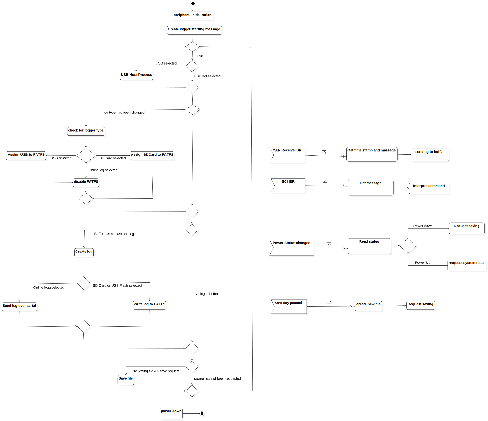

Activity1
UMLActivity
Untitled
::
Activity1
Description
none
Diagrams

ActivityDiagram1
Groups
InterruptibleActivityRegion1
InterruptibleActivityRegion2
Nodes
InitialNode1
check for logger type
DecisionNode1
peripheral Initialization
Assign USB to FATFS
Assign SDCard to FATFS
disable FATFS
DataStoreNode1
CentralBufferNode1
MergeNode1
While
DecisionNode2
DecisionNode3
Create log
DecisionNode4
DecisionNode5
Create logger starting massage
ActivityFinalNode1
MergeNode2
MergeNode3
DecisionNode6
DecisionNode7
DecisionNode8
Save file
MergeNode4
power down
Get time stamp and massage
CAN Receive ISR
sending to buffer
DecisionNode9
Send log over serial
Write log to FATFS
MergeNode5
USB Host Process
DecisionNode10
MergeNode6
SCI ISR
Get massage
interpret command
Power Status changed
Read status
Action1
DecisionNode11
Request saving
Request system reset
One day passed
create new file
Request saving
Edges
(InitialNode1→check for logger type)
(InitialNode1→peripheral Initialization)
(peripheral Initialization→check for logger type)
(InitialNode1→peripheral Initialization)
(peripheral Initialization→check for logger type)
(check for logger type→DecisionNode1)
USB selected (DecisionNode1→Assign USB to FATFS)
SDCard selected (DecisionNode1→Assign SDCard to FATFS)
Online log selected (DecisionNode1→disable FATFS)
(ISR→)
(Assign SDCard to FATFS→MergeNode1)
(disable FATFS→MergeNode1)
(Assign USB to FATFS→MergeNode1)
(Assign SDCard to FATFS→MergeNode1)
(MergeNode1→DecisionNode2)
(DecisionNode2→DecisionNode3)
Log avalable (DecisionNode3→Create log)
(DecisionNode3→DecisionNode2)
(DecisionNode3→DecisionNode2)
(check for logger type→DecisionNode4)
True (DecisionNode4→DecisionNode10)
logger type changed (DecisionNode5→DecisionNode1)
log type has been changed (DecisionNode5→check for logger type)
(check for logger type→DecisionNode1)
(peripheral Initialization→DecisionNode4)
log type has not changed (DecisionNode5→DecisionNode2)
(DecisionNode2→Create log)
(Create log→DecisionNode4)
(DecisionNode5→MergeNode2)
(MergeNode1→MergeNode2)
(MergeNode2→Create log)
(DecisionNode5→MergeNode3)
(MergeNode1→MergeNode3)
(MergeNode3→Create log)
(MergeNode3→DecisionNode6)
new log available (DecisionNode6→Create log)
Buffer has at least one log (DecisionNode6→Create log)
(Create log→DecisionNode7)
No log in buffer (DecisionNode6→DecisionNode7)
(Create log→DecisionNode7)
(DecisionNode7→DecisionNode8)
No writing file && save request (DecisionNode8→Save file)
(Save file→MergeNode4)
saving has not been requested (DecisionNode8→MergeNode4)
(DecisionNode4→MergeNode4)
(MergeNode4→DecisionNode4)
(power down→ActivityFinalNode1)
(CAN Receive ISR→)
(Get time stamp and massage→sending to buffer)
Online logg selected (DecisionNode9→Send log over serial)
(DecisionNode7→DecisionNode9)
SD Card or USB Flash selected (DecisionNode9→Write log to FATFS)
(Write log to FATFS→MergeNode5)
(MergeNode5→DecisionNode8)
(Send log over serial→MergeNode5)
(Create log→DecisionNode9)
(Write log to FATFS→MergeNode5)
(MergeNode5→DecisionNode7)
(DecisionNode7→DecisionNode8)
(USB Host Process→disable FATFS)
(Assign USB to FATFS→USB Host Process)
(Assign USB to FATFS→disable FATFS)
USB selected (DecisionNode10→USB Host Process)
USB not selected (DecisionNode10→MergeNode6)
(USB Host Process→MergeNode6)
(MergeNode6→DecisionNode5)
(SCI ISR→)
(Get massage→interpret command)
(Power Status changed→)
(Read status→DecisionNode11)
Power down (DecisionNode11→Request saving)
Power Up (DecisionNode11→Request system reset)
(One day passed→create new file)
(One day passed→)
(create new file→Request saving)
Properties
Name
Value
name
Activity1
stereotype
null
visibility
public
isReentrant
true
isReadOnly
false
isSingleExecution
false
Owned Elements
ActivityDiagram1